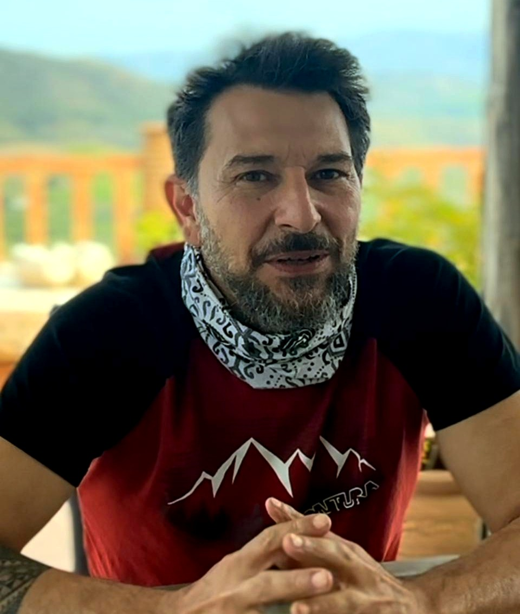

KataClimb usa l'arrampicata per risvegliare corpo, fiducia e coraggio. Non è fitness. Non è coaching. È un percorso verticale verso chi sei davvero.
Ogni Kata è un gesto che il corpo impara in parete e che la mente porta nella vita. Non insegniamo arrampicata — usiamo l'arrampicata per insegnarti a fidarti, a cadere, a sostenere l'altro, e a volare.
Qui trovi persone autentiche e straordinarie —
non perché sono perfette, ma perché scelgono
di essere in relazione con la vita, il flusso, e in amore.
Nessuno è arrivato. Siamo tutti in progressione.

KataClimb non nasce da una teoria. Nasce da migliaia di ore in verticale, nel vuoto, sott'acqua, nel deserto. E da migliaia di persone portate a vivere la stessa cosa.
Coppa del Mondo di arrampicata
Migliaia di itinerari difficili e centinaia di vie che pochi al mondo hanno salito
Alpinismo estremo su cascate di ghiaccio
Scialpinismo e immersioni in relitti profondi
Esperienze in deserto e paracadutismo
Arrampicata su scogliere senza corda
Rapporto diretto con la morte, incidenti, riabilitazioni
Una vita in viaggio espandendo radici
Migliaia di persone portate a vivere lo stesso, allo stesso modo
Insegna il verticale da 33 anni e continua a salire
KataClimb studia la performance umana attraverso il corpo in azione. Non è una disciplina isolata — è un sistema integrato, ripetibile, testato in oltre trent'anni di pratica continua dell'estremo.
Come ti predisponi determina cosa succede. Il corpo lo sa prima della mente.
Il movimento efficiente non è forza bruta — è intelligenza corporea applicata alla gravità.
In cordata emergono i ruoli autentici. Chi guida, chi sostiene, chi fugge.
Ogni manovra ad alto rischio diventa normale — perché è vissuta, gestita, ripetuta.
In parete non c'è tempo per la teoria. Risolvi o resti fermo. Il corpo impara a decidere.
Quando la posta in gioco è reale, le maschere cadono. Si comunica con tutto il corpo.
Alla ricerca dell'oltre — dove finiscono le tecniche e inizia la visione.
C'è un punto nel metodo in cui tutto cambia. Non te lo possiamo spiegare — perché se te lo spieghiamo, pensi di averlo capito. E non l'hai capito.
Devi cascare e rialzarti. Sporcarti e ripulirti. Danzare con l'altalenare delle cose — basso e alto, bello e brutto, gioia e dolore. Fino a quando il corpo smette di giudicare e inizia a muoversi.
Questo non si legge. Si vive.
Liberati dalla mediocrità, dall'ipocrisia e soprattutto dalla paura.
Scopri la tua straordinarietà, manifestala,
e offri al mondo quello che solo tu puoi dare.
Nuovi campi, scenari, possibilità.
Qui si gioca sul serio!
KataClimb non eroga corsi — li erogano le strutture riconosciute. Scegli in base a chi sei e quanto tempo hai.
Più tempo, pratica monitorata, crescita progressiva. Ogni settimana in palestra, ogni mese un passo avanti. Il percorso lungo è dove il metodo respira davvero.
Poco tempo, massimo impatto. Intensivi nel weekend — quello che nel percorso lungo si fa in un mese, qui si comprime in due giorni. Mindset, strategia, corpo in azione.
Team building, leadership, riconoscimento dei ruoli in cordata. Un weekend che cambia il modo in cui il tuo team si fida, comunica e si sostiene.
Vuoi diventare istruttore KataClimb? Si parte da zero, anche se arrampichi da anni. Il metodo si impara dal primo Kata — e si insegna solo quando il corpo lo dimostra.
La certificazione più importante. Un Kataclimber sa arrampicare su roccia, affronta sopra il 7a, sa far sicura prevedendo e anticipando cadute, le smorza, ed è il compagno ideale.
Quando andrai in giro per il mondo, le persone sapranno che sei affidabile. Ti cercheranno per arrampicare o per fare cordate di impresa. La certificazione KataClimber è il tuo passaporto di cordata mondiale.
Il portale non è solo un archivio — è la tua vetrina. Qui vedi i tuoi progressi, accumuli punti con ogni Kata certificato, e costruisci il tuo percorso passo dopo passo.
Quando attraverso KataClimb avrai chiara la tua straordinarietà e la tua missione, potrai dichiarare chi sei e cosa offri. E unirti a cordate vere — di arrampicata, di vita, di impresa.
Il profilo è il modo in cui il mondo ti trova. Non un curriculum — un corpo che dimostra.
33 Kata. 5 fasi progressive — e poi si va ben Oltre. Si parte dal corpo, si arriva oltre sé stessi. Ogni allievo è il nostro centro e la riprova della nostra coerenza e responsabilità.
Relazione con il corpo. Postura, asse, equilibrio, movimento consapevole. L'allievo impara a riconoscersi nello spazio. Tutto parte da qui.
Il corpo impara a fidarsi del sistema. La gravità non è un nemico — è una forza con cui entrare in relazione. Decisioni sotto pressione, gestione del rischio.
Relazione con la cordata. Attenzione al compagno, sincronizzazione. Responsabilità reciproca. La vita dell'altro è nelle tue mani.
Relazione con il vuoto. Postura di volo, atterraggio, gestione del corpo in aria. La paura si trasforma in competenza misurabile.
Il patto di fiducia. Controllo reciproco prima della salita. Il gesto fondativo di ogni cordata — in parete e nella vita.
Oltre la tecnica, oltre la parete. Qui il metodo diventa vita. Sviluppare la propria visione e missione come co-creatori della realtà. Solo dal vivo — KataCamp.